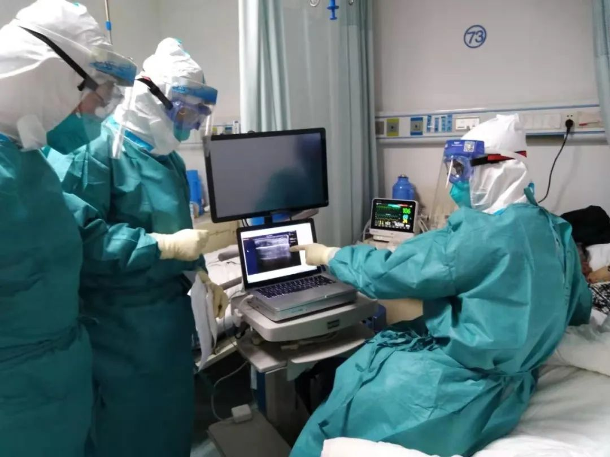
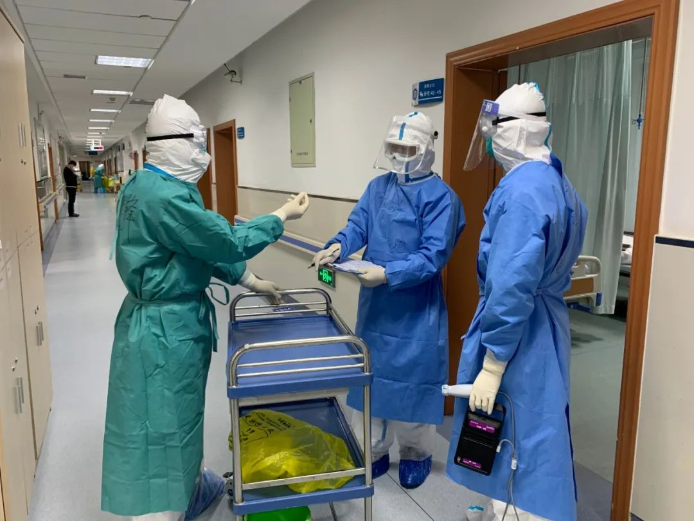
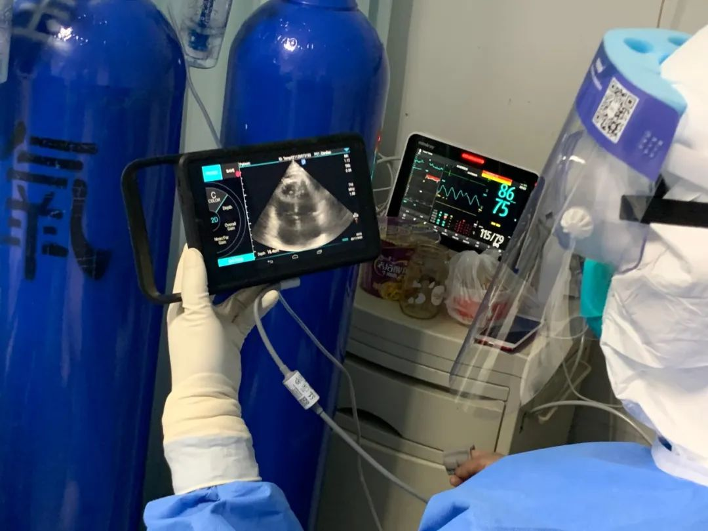
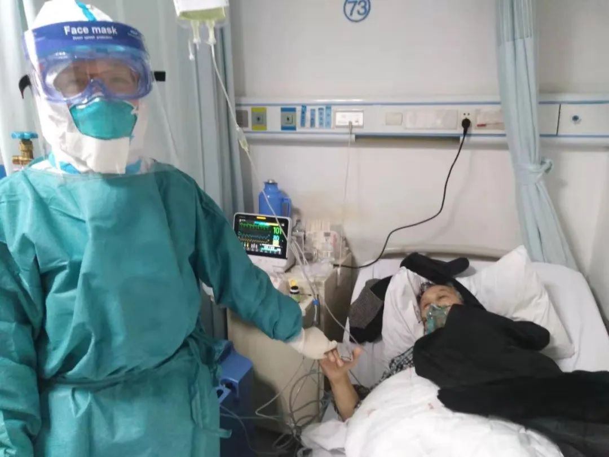

武汉社区工作者：我在夹缝里，负责挨骂和上报｜故事FM
原文链接 备份链接 🎧 点击上方图片，跳转「故事FM」小程序，收听真人讲述。记得添加「我的小程序」，一键收听全部故事哟！ 在这次疫情期间，故事FM 采访过武汉的医生、方舱医院的确诊者、还有武汉的癌症患者……，我们试图通过武汉各种群体的故 …

易慧是援助武汉的主治医师，她与同事一起进行了一次对重症新冠病人的抢救。记者详细复盘了手术的细节，记录了医生在条件受限的情况下如何判断病情、选择手术方案，最终艰难完成。
这场手术看起来惊心动魄，却是武汉医院里的日常。
···············
凌晨5时，易慧准时起床洗脸、刷牙，吃早餐。她是援助汉口医院重症隔离病房的主治医师，给自己备了一桶泡面，半盒苏打饼干，为避免值班时上厕所，没敢多喝水。
73床陪房家属熊志强也没能睡踏实。老父亲75岁，血氧饱和度在86%—88%间徘徊，“如果是平时，肯定得‘插管’”。他在凌晨时多次醒来，披着半透明的雨衣，权当防护服。窗外没有光，念起同样在别处住院的母亲，他不禁心急如焚。
易慧对这位礼貌的家属印象深刻。她见惯ICU里的生离死别，经常应对家属爆发的激烈情绪，但熊志强从不埋怨。
吃过早饭，她在鼻梁上贴了张防勒痕的“水胶体敷料”，匆匆出门。六点半抵达医院，她穿好防护服，戴上手套、鞋套、护目镜，穿过4道门进入隔离区，一眼就望见73床家属，安安静静坐在那里，腰背挺得很直。
上午7时交完班，易慧开始查房。她个子不高，瘦削、柔弱，给衣服写名字做标记时，习惯顺手画一个心形图案。
突然，她听到责任护士呼唤自己的名字。73床忽然感到胸口绞痛，难受得大喊大叫。
原来熊志强父亲吃过饭，刚休息一会儿，倚靠枕头坐起来，抻出胳膊拉伸，情势就急转直下。9时20分，易慧赶到现场，监护仪屏幕显示的血氧饱和度，骤然降至百分之六十几，如果不想办法抢救，几个小时后，病人即会撒手人寰。
易慧记得那天是2020年1月31日。武汉“封城”的第7日。
❶
***是否穿刺？***
走廊里长长的灯管晃人眼睛。病房内，氧气罐的湿化瓶咕噜咕噜，各种机器发出嗡嗡的声音，不止不休。
易慧翻出73床指尖的红外线指脉。夹子没有脱落，面罩佩戴完好，罐内氧气充足。她在ICU实战多年，养成首先检查设备的条件反射。
病人血氧饱和度骤降的可能性太多了。比如“肺栓塞”，病人长期躺卧，下肢血液瘀滞，血栓容易脱落，需要服用溶栓的药物“瑞通立”。
也有可能是“肺心病”，这种疾病的病理更为复杂。人类心脏分左右两个心室，右心室回流无氧血，通过压力泵入肺部，利用肺泡伸缩补充氧气。氧合后的血，流往左心室，喷入动脉供应给全身。被上下器官汲完氧气的静脉血，再次由右心回收，往肺里泵血补氧。
肺部病变后，免疫细胞本能自保，在病毒攻击的位置产生“渗出”，附着于血管外壁，垒筑起一道屏障，拦截肺里的氧气向血液中弥散，以至于，经流双肺肺泡加工输送至左心室的血液，氧含量不足，正是血氧饱和度下降的原因之一。
忆及病人的情况时，易慧直视前方，语速均匀，一字一顿讲起艰涩复杂的医学术语。介绍完专业内容，她才恢复浓重鼻音的平舌音，语气也温和起来。
“更要命的是，肺内气管由于缺氧收窄”，她接着解释说，右心向其泵血困难，内部压力飙升，把自己憋大，从而挤压心房空间，左心持续瘪塌。
新冠老年重症患者当中，罹患此两种“合并症”状况的很普遍。“不少人去世都跟这个有关。”易慧分析。

“还有一种可能，那就是气胸。”9时23分，同组的医师吴健锋过来帮手。吴健锋是重症医疗学科领域的“大牛”，同伴以“吴老师”相称。他盯了一眼心电监护仪，血氧饱和度只有68%，转过头，对着易慧说：“气胸的可能性也很大”。
三言两语间，司向医生也闻讯赶到。空间显得局促，医生们紧张交流着病人的情况，湿化瓶的咕噜咕噜声被淹没。
气胸的可能性当然也很大，易慧说，那意味着局势更为紧迫。病人在极度缺氧的处境下，会竭尽全力呼吸，用力过于刚猛，腔内负压剧增，肺泡瞬间撑破。气体顺着裂纹流溢，滞留在胸腔内两层薄膜间。
目前的难度在于，如何确诊气胸。平日里，即便是使用最简易的听诊器，也能根据胸腔的不同声响做出大致区分。现在耳朵被口罩、面罩死死包裹，双手套上三层手套，无法行使基础操作。如果是在设备齐全的ICU病房，再不济，也能随手抽出一台超声仪，把病灶摸清楚。
几人交换意见，凭借经验，怀疑气胸的可能性最大。通常的应对之法，需在锁骨下方第二肋间做“穿刺”，插入管子把积聚的气体放出来。
事态紧急，要不要直接穿？“还是不能。”不敢确定，吴健锋回忆，气胸有个明显特征，“漏气”后胸腔鼓鼓隆起，看上去不明显，“至少部位吃不准”。
听着同事们的讨论，一个更大的不安从易慧心底冒出来——也有可能是病人本身的新冠病情，不可逆转陡然加重。
❷
***妈妈真的很爱你***
_我叫易慧，广州市中山大学第一附属医院ICU主任医师，大年三十那天晚上抵达武汉。1月20号钟南山讲完话，我们科室的同事之间讨论，大家都在说，肺炎的事情可能非常大，有预感要上“前线”。没想到，这么紧急。_
我们对口武汉的汉口医院。情况比所能想象到的最坏结果，还要糟糕很多。医院基本上处于半瘫痪状态，到处是病人，原来的医务人员也倒下不少。我们过来，先是打扫卫生，搬氧气罐，有一次，我半夜一两点下班出来，还看到我们的刘处在那里捡垃圾。
说实话，我在ICU做了十几年医生，各种各样的大喜大悲都遇到过，可从来没有像这次有这么强烈的无力感。太无力了。
2019年，我印象最深刻的病人是个小女孩，她是普通肺炎，但非常严重，别的地方已经建议做肺移植。但家属没有放弃，我们也没有放弃，她在ICU住了20多天，竟然一点一点熬了过来，最后康复出院了。
这是去年我印象很深的一个患者，已经到那个程度，硬是从死神那里拽了回来。所以我相信奇迹。
ICU的工作风格，常常是为了抢救不惜成本，像体外膜肺这种方法，动辄消耗几十万，动用整个科室的力量，抓住一线希望挽救生命。可眼下太难了。刚开始，吸氧都成问题，管网老化，再加上流量高，如果某个病床阀门开太大，其他人就吸不了了。你说，给谁吸，不给谁吸？
在武汉，我第一个没有拉回来的病人，是一位50多岁的阿姨。之前一直没有床位，只能在门诊和社区隔离。等到能接收她时，赶快把氧给她吸上，可是，刚住进来一个多小时，人就没了。
我的职业要求自己，尽量保持平常心，保持理性，可这样的事情见多了，还是伤感。

很多人没能见到病人最后一面，趴在地上大哭，边哭边说，昨天还好好的，怎么一下子人就没了，还有好多话没对你讲。他们有恋人，有夫妻，也有孩子对爸爸妈妈，或者，爸爸妈妈对孩子说。
这对我的生活态度、世界观影响很大。我一直对身边的朋友说，我们大家不要隐藏自己对爱的人的感情，有什么想说的话，该说就说。我对父母、对先生、对女儿，一直都这样。
在武汉这些天，恰逢女儿四岁生日，这是我第一次没陪她一起过生日。她很不开心，生气说不要妈妈了。我想对她说，妈妈很爱你，妈妈真的真的很爱你。
❸
***“肺点，找到肺点了”***
“超声仪来了。”
那是一台大小接近于电脑桌的塑料推车，放着底座足有5厘米厚、笔记本电脑形状的主机，配有手柄的面板连接着一根近2米长的细线，直通棒槌状的探头。
型号虽然陈旧，但是能用。吴健锋刚刚抱着试一试的心态，给医务科打电话，询问医院有没有超声仪，没想到还真有。9时35分，护士推来整套超声仪设备。
“让我来吧。”
“嗯。”
易慧轻声细语，动作干净利落。她把设备推进去，紧贴氧气罐竖立。司向接过超声仪面板，往探头上涂了一小撮藕合剂，走到病床边。

司向今年33岁，是中山一附医的业务新星。他坐上床沿，拿探头触碰患者心口。透过面罩，他低头去看面板液晶屏，上面的雪花点颗粒袖珍、排列密集，自下而上灰度渐浅，过渡得自然顺滑。
“不是心肺病。”易慧通过主机大屏幕判断。
探头往上走，来到关键的肺叶区域。胸膜滑动，清晰、正常。
换边，再照。啊，胸膜滑动没了。
司向解释，两肺之间隔着“脏层胸膜”和“壁层胸膜”，呼气吸气来回开阖，两层胸膜相互滑动的现象，叫“胸膜滑动”。这属于正常状态，说明没有气体在流动。
“如果不动了，你看，两个白点、两个黑点没有动，那说明，中间有气体跑进来了，动不了了。”
漆黑一团的面板上，像云一样的白带上宽下窄，呈倒三角层层凝固。9时40分，气胸的怀疑进一步得到佐证。
接下来，要是能找到“肺点”——血氧饱和度数值断崖下降的原因就板上钉钉了。司向转过头，瞄了一眼易慧和吴健锋，没能瞅清两人的表情。他说，职业直觉告诉自己，两位老师鼓励自己继续。
探头顺着胸线从左往右蠕动，司向摸着肋骨，半根半根往下探索。
易慧深吸一口气，感觉身体被勒得更紧。她与吴健锋死死盯着屏幕。
时间一分一秒流逝。9时43分。
9时45分。
46分。
“谢谢你们啦。谢谢医生。”75岁阿伯神志清醒，喃喃冒出几句话。
易慧在ICU工作14年，她明白，ICU是踩钢丝的艺术，每做出一个抉择，就会面临新的风险，能取得病人或者家属的信任，对抢救非常重要。“生死所系，性命相托。这份信任对医生很重要。”
学术界公认，肺点是确诊气胸的一条“金线”，它是实时超声显像中肺膜滑动与消失的分界点。不过，肺点藏匿极为隐蔽，通常难窥真容。当前，右肺无胸膜滑动的图形已明晰，不能一直拖下去，实在不行，就穿刺。
案头必备的胸部穿刺套件，是东挪西凑临时寻来。一份胸穿套盒，针头、丝线、气筒够用，没有抽气的胶管，只好拿一根规格略大的粗管，改造前后开口，凑合使用。排气的水封瓶也没有，医生发动护士，把科室里唯一的瓶子奉献出来。
“肺点，找到肺点了。”9时55分，司向几乎吼了出来。找到了，这下可以确认，司向伸出指头反复指向电脑，可以做穿刺了。吴健锋点点头，对大家说，好的。
主机屏幕上，横纹拼接的锥形密度匀称，腰部围着一条截开的黑带。得一帧一帧细辨，才能看出眉目，一个模糊的点，出现在暗灰结界处。
易慧说，现在该我上场了。
❹
***爸爸的排骨汤***
我们家最早感染的人是我父亲。1月16号，他感觉发烧，去医院看病，当天住院治疗。那个时候，没怎么听说过这个病毒，我去汉口医院看他，只是觉得人比平时多。大概20号觉得不对劲，那个时候再去医院，医生护士开始穿防护服，看起来就很恐怖了。
爸爸住院几天之后，我妈妈也开始发烧。她去的是长航医院。说来也巧，刚好有一个床位，就住进去了。晚一两天，哪怕再晚半天，床位就没没了。
妈妈后来从长航转到金银潭，我就去金银潭照顾她，我弟弟去汉口医院照顾爸爸。一个妹妹在长沙，也被感染了。
妈妈恢复得不错，每一天都在好转，爸爸那边的情况很不乐观。我去汉口医院看我爸，他跟我说想喝汤，就做了好吃好喝的给他端过去。爸爸下楼来接，才几天没见，样子全变了，如果不是他叫我，还以为是病友帮忙来取东西。
他头发散乱，走路颤颤巍巍。等认出来那就是爸爸，我吓了一跳，排骨汤掉地上，撒了一地。太伤心了，爸爸怎么成了这样子。我又跑回去，给他盛了一碗肉汤送过去，那天如果没有让爸爸喝到那碗汤，我一辈子都不能原谅自己。
爸爸越来越严重，起不了床，我就给他送进去。好像按规定，隔离病房不让家属进去，那时候乱成一锅粥，顾不上那么多，再后来，听说陆续都不让再进去了。我很小心，能穿能戴的都披上了，我们家有好几件雨衣，蓝的、黄的、绿色轮流换。
爸爸不想让人进去看他，担心把我也感染了，我就坐在门口，等有需要，再进去帮忙。我非常非常感谢医生护士，他们真的付出很多。
我叫熊志强，我弟弟叫熊志勇，寓意勇敢、坚强。我是很乐观的人，我爸爸我妈妈，我们一家人都很乐观，这件事之后，我还会教育我儿子，要乐观，要积极对待生活。可是，我内心深处，还是很悲伤，伤痛会一直都在。
❺
***“看到阳光，感觉又活过来了”***
针管足足15厘米。易慧从盒子里抽出来，举在眼前。方才肺点确认的地方已经消毒，条件所限，尽力在侧肋间做了局部麻醉。她分开食指和中指，固定住病人的皮肤，捏紧针管尾部蓝色的“三通活栓”，将直径0.4毫米的针眼，瞄准腋中线的一个点，缓缓刺去。
易慧站着操作，腰弯成弓形。司向、吴健锋退守到一米开外的空间。
“啊！”老伯竭力配合，可还是疼。
刺破肌肤后，针头撑开皮下组织，触感变紧。易慧掌握节奏，持续向前深探，直至长针埋进肉里5公分。抵触感消失后，意味着已穿入胸膜腔。
“这就是为什么，最好能探明肺点精准方位的原因，弄不好再损伤肺脏的话，无疑雪上加霜。”
接下来是装引导线，那是一根极细的钢丝，易慧将其沿着针眼扎进胸腔内部，再用扩张器将洞口扩充。她把先前准备好的胶管，顺着钢丝放进胸腔里。
好了，积气终于可以往外流了。
不过还不够。胸腔内气体太多，自动外泄太慢，有必要人工引气。引流管尾巴留有中空切口，插入注射器往外吸。注射器规格为50毫升，一边抽，易慧一边在心里记着数字。司向凑过去，数出声来。
“一管”。
“两管”。
“三…”。
“升了，（血氧）饱和度升了。”抽完第5管，吴健锋声调忽然增高，他把心电监护显示的数据报出来，血氧饱和度往上提升了两个百分点。

说明有效果。易慧仍然没有说话。不过循着吴医生提醒，目光投向液晶屏幕，抬起头，再放下来。绿色字码很快突破70%，然后，一点一点往上攀爬。她记得很清晰，50毫升的注射器，整整抽了10管。
指头感受到注射针筒的负压之后，易慧停止抽气操作。最终，血氧饱和度定格在83%。
比出事前的87%，还是降了不少。至少，把人从鬼门关拉回来了。
下午两点钟下班。天气一转连日来的阴霾，温度也上升了。沐浴在和煦的阳光下，众人来了兴致，在医院门口留下一张合影。吃过饭，易慧开始活跃，在小组微信群里说：“大家把我们今天那个阳光灿烂相片发群里哈。”

几张照片传过来。易慧身穿手术服，比划着大拇哥，大笑的嘴巴撑起口罩。同伴在图下留言：看到阳光，我感觉自己活过来了。
❻
***一张弥足珍贵的床位***
“妈妈，你什么时候回来呀？”
“妈妈打完怪兽就回去了。”
每天晚上八点钟，易慧和女儿、爱人通视频电话。来武汉快十天了，她很快适应了非常时期的生活，但无法克服的心疾就是思念女儿。孩子刚满4岁，正飞速成长。
大年三十接到援鄂通知，易慧几个小时后就要出发。丈夫妇产科大夫，能够理解这个决定。在去机场的路上，易慧纠结了一路，不知该如何对父母说。在候机楼，她问同事，原来大家都向老人交代过。她才拿起手机给老家拨电话。双亲皆为医疗系统退休职工，他们表示支持。
唯独女儿，不太愿意接受。
2月2日晚上通完话，易慧有些失落。乖巧、懂事的女儿，明显不开心，想让妈妈回家。
易慧心神不宁。2月3日，她值凌晨1时到7时的后半夜班。天气连续放晴两日，但又冷了。她十二点多出发去医院，途径高架桥边缘，桥上几乎没有车，路灯很亮，巨大暗影投向人行道。几个人交流说，也不知道这波疫情，什么时候是个头。
就在2月2日下午，医生邹子俊值班，通知73床的家属熊志强，说病人已然奄奄一息。熊志强告诉邹医生，母亲恢复的很好，早上从医院接回家。没想到，晚上却收到父亲的噩耗。
“很遗憾，老爷子没挺过来，”当晚9时50分，邹医生宣告熊老爷子的死亡。据邹子俊回忆，熊志强没有责难，不停地说谢谢，谢谢十几天来的救助。他说，老爷子在弥留之际，能遇到这么好的医生，是种缘分。
3日凌晨换班，邹子俊有些疲惫，他给易慧交接了一部分工作，以及讲了几个重点病人的情况。
“那个，73床的老爷子，走了。”邹子俊最后说。
“啊，”易慧回答说：“还是，走了啊。”
73床还是走了。细究下来，大伯的病情肯定要插管。可惜武汉病人太多了，远远满足不了需求。如果早期能通上呼吸机，将血氧饱和度提升到90%以上，那么治愈的概率会增加很多。
易慧再没见过熊志强。
根据2月3日民政部下发的殡葬业规定，疫情防控期间，应当简化丧事办理，不举办守灵、告别、祭奠等仪式。
此前，护士已经把0.5%过氧乙酸棉球，填塞进入患者口、鼻、耳等所有开放通道，留下的微创伤口作缝合处理，将其穿戴齐整，用双层布单包裹，装入双层胶袋中。
然后，她架起紫外线灯管，对准病床照射半个小时。拆除枕套、被套、床单，装进橙色口袋，用2000mg/L的氯擦拭床、柜子、呼叫铃、墙壁，再用紫外线灯照射半个小时。完结后，重新套上消过毒的白色枕套、被套、床单。
新冠时期的武汉，重症隔离区的一张床位弥足珍贵。

在公众号后台回复彩蛋，送你一个彩蛋
采访：刘君鹏、闫力元、龚柔善
撰文：刘君鹏
编辑：靳锦
图片提供：刘君鹏、受访者供图
运营编辑：二水


原文链接 备份链接 🎧 点击上方图片，跳转「故事FM」小程序，收听真人讲述。记得添加「我的小程序」，一键收听全部故事哟！ 在这次疫情期间，故事FM 采访过武汉的医生、方舱医院的确诊者、还有武汉的癌症患者……，我们试图通过武汉各种群体的故 …
原文链接 备份链接 “我们经历着生活中突然降临的一切，毫无防备。”生命中不能承受之轻，用来形容这些天，是那样的贴切。 “时代的一粒灰，落到个人头上，就是一座山。”在突然被按下暂停键的危城武汉，既有个人的茫然无助，也有凡人的挺身而出。恐慌， …
原文链接 备份链接 凤凰新闻客户端 凤凰网在人间工作室出品 打开凤凰新闻客户端，搜索「在人间」并关注 一 2月8日元宵节。晚上9点多，家里老人小孩都已经睡了。我和妻子还没睡，在刷手机看新闻。突然，工作群里冒出消息，主管说“北京武汉视频紧急 …
原文链接 备份链接 新病毒面前，以往治疗经验会被推翻重来，很多当下的经验未经过时间考验，重症病人的治疗争议由此出现。 早期一些病人，起病快，病情很严重，病床不足加上120车辆供不应求，医院之间的周转并不顺畅，真正被送到ICU时，已经拖 …
原文链接 备份链接 「应收尽收」的当下，武汉最惊心动魄的战场已经转移到了重症病房。2月22日下午5点，华中科技大学同济医学院附属同济医院光谷院区的ICU病区里，医生办公室的大屏幕正监控着每张病床的情况。11床和19床的患者刚刚去世，护士在 …